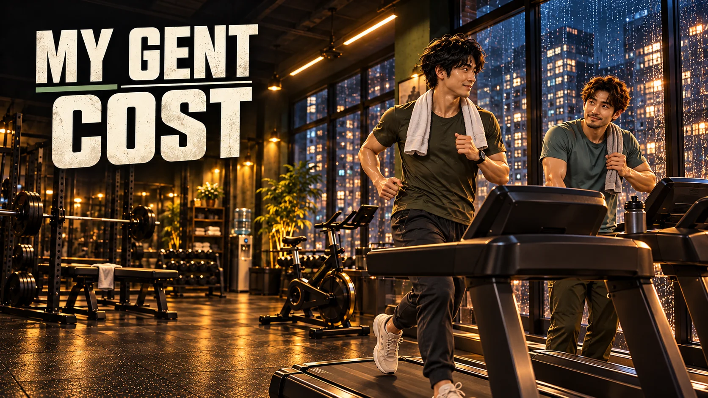

作品概要
今日ももう一回鍛えるか、それとも帰って明日に備えるか。ジムでの時間を積み重ね、大会の舞台を目指します。
MY GENT COSTは、仕事帰りに24時間ジムへ通い、ランニング・エアロバイク・ベンチプレスに挑戦するゲームです。ジムの常連たちと出会い、トレーニングや対戦を重ね、体力と機材の熟練度を育てながらGYM CONTESTを目指します。 通常シーズンは春・夏・秋・冬の各20日、合計80日。行動するたびに増える眠気や翌日の成長効率も考え、今日の練習と休息のバランスを選びます。
ゲーム / ジム育成シミュレーション
仕事帰りに24時間ジムへ通い、3種目を鍛えて常連たちと競うブラウザゲーム。
今日ももう一回鍛えるか、それとも帰って明日に備えるか。ジムでの時間を積み重ね、大会の舞台を目指します。

Quick Look
今日ももう一回鍛えるか、それとも帰って明日に備えるか。ジムでの時間を積み重ね、大会の舞台を目指します。
MY GENT COSTは、仕事帰りに24時間ジムへ通い、ランニング・エアロバイク・ベンチプレスに挑戦するゲームです。ジムの常連たちと出会い、トレーニングや対戦を重ね、体力と機材の熟練度を育てながらGYM CONTESTを目指します。 通常シーズンは春・夏・秋・冬の各20日、合計80日。行動するたびに増える眠気や翌日の成長効率も考え、今日の練習と休息のバランスを選びます。
初日の3種目体験から始まり、2日目には常連の佐藤と出会います。自主トレや対戦は1日に複数回行えますが、行動のたびに眠気が増加。帰宅すると翌日へ進み、眠気やモチベーション、怪我、成長効率が変化します。
ジム内の状態パネルでは、今帰宅した場合の翌朝の眠気と成長効率を確認できます。眠気が高いときには、もう1回行動した場合の予測も表示されます。
曜日ごとに来店傾向が異なる7人の常連が登場し、対戦記録に応じて反応が変化します。対戦中は相手のプレイが小画面に表示され、進行状況や暫定スコアを比較できます。
競技の結果に応じて身体能力と機材の熟練度が成長し、競技中のスタミナや負荷、タイミングなどに影響します。能力の成長や対戦勝利に応じて、ジム内には記録端末や大会案内なども追加されます。
通常シーズン後のWEEK 17〜20には、各週の最終日に本戦が開催されます。県予選はランニング、地方予選はバイク、全国大会はベンチプレス、世界大会はランニング。敗退や棄権でもその周回は終了し、結果画面からタイトルへ戻るか、新しいシーズンを始められます。
ジム内は一人称視点です。WASDまたは矢印キーで歩き、画面をドラッグして視点を回転。設備や常連に近づいてF／Eで利用・会話でき、画面右側の一覧から選ぶこともできます。入口付近のCHECK OUT端末から帰宅すると翌日へ進みます。
タイトルからシーズンの「はじめから」「つづきから」に加え、3種目を個別に遊べる「練習」を選択できます。練習結果はシーズンの育成に反映されません。競技操作はキーボード中心です。
シーズンの進行はブラウザ内に自動保存されます。サイトデータを消すとセーブも失われます。競技中に再読み込みした場合は、競技を再開せず当日のジム画面へ戻ります。
日本語と英語を切り替えられ、言語設定はシーズンのセーブとは別に保存されます。BGMはブラウザの制限により最初の操作後に始まり、サウンドボタンまたはMキーで音をミュートできます。
タイトルから大会・周回リザルトまで実装した、プレイ可能な開発版です。セーブ保護、主要画面、BGMは個別のブラウザテストで確認されています。
現行版で最初から80日間を通し、4大会、周回リザルト、再スタートまで進む連続プレイ検証と、人間による長期プレイ評価は未完了です。E2Eテスト全体の成功も確認されていません。
ブラウザでプレイできる開発版です。タイトル、3種目、育成、対戦、4段階の大会と周回リザルトを実装しています。v1.0候補としての通し検証は継続中です。